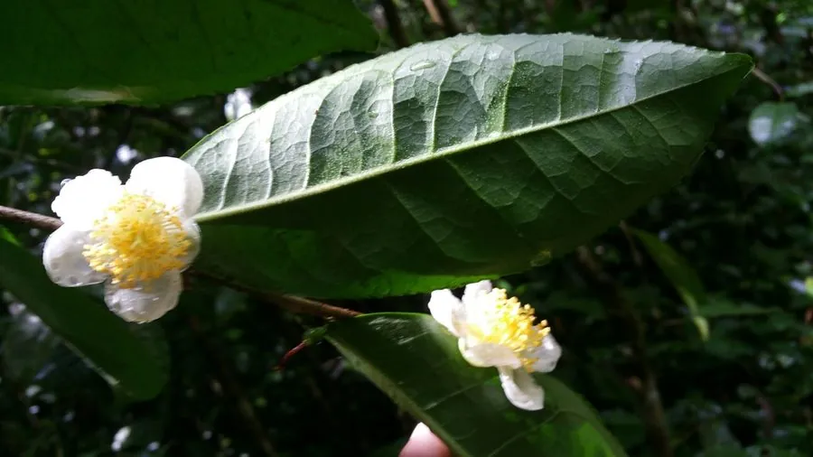

农作物与经济植物 · 植物界
茶树 Camellia sinensis

茶树的嫩叶经加工可制成绿茶、红茶等，是世界三大无酒精饮料之一，中国是最早种茶和饮茶的国家。
- 分类
- 门被子植物门纲双子叶植物纲目杜鹃花目科山茶科属山茶属
- 栖息环境
- 海拔 500–2000 m 的酸性土壤山地，喜温暖湿润与散射光
- 地理分布
- 原产中国西南，现中国、印度、斯里兰卡、肯尼亚等地广泛栽培
- 保护级别
- 暂无评估（栽培作物）
物种志
茶树是山茶科常绿灌木或小乔木，株高 1–6 m，栽培茶树常修剪成 1 m 左右的灌丛。叶革质，椭圆或披针形，边缘有细锯齿，叶脉明显，嫩叶背面有白色茸毛。花白色，五瓣，雄蕊多数，有淡淡香气，花期 10–12 月。果实为蒴果，内含 1–3 粒种子。茶树的芽和嫩叶是制茶原料，按采摘标准和加工工艺不同，可制成绿茶、红茶、乌龙茶、白茶、黑茶等。
茶树原产中国西南地区，云南、贵州、四川一带至今仍有野生古茶树；中国人发现和利用茶已有数千年，唐代陆羽著《茶经》系统总结种茶与饮茶之法，茶马古道把茶叶运往边疆与海外。茶树喜温暖湿润、酸性土壤和散射光，多分布在海拔 500–2000 m 的山地。茶叶含茶多酚、咖啡碱和氨基酸，饮茶提神解腻；茶多酚可提取作抗氧化剂。中国、印度、肯尼亚、斯里兰卡是主要产茶国。
形态与习性
- 株高1–6 m，栽培树常修剪为灌丛
- 叶革质，边缘有细锯齿
- 花白色五瓣，花期 10–12 月
- 土壤喜酸性土壤
- 主要成分茶多酚、咖啡碱与氨基酸
- 主要用途制茶与提取茶多酚
- 原产地中国西南地区
趣味知识
- 中国西南的野生古茶树树龄可达数百年甚至上千年。
- 同一茶树的芽叶，按不同工艺可做成绿茶、红茶或乌龙茶。
- 茶叶中的咖啡碱能提神，茶多酚则带来涩味和抗氧化作用。